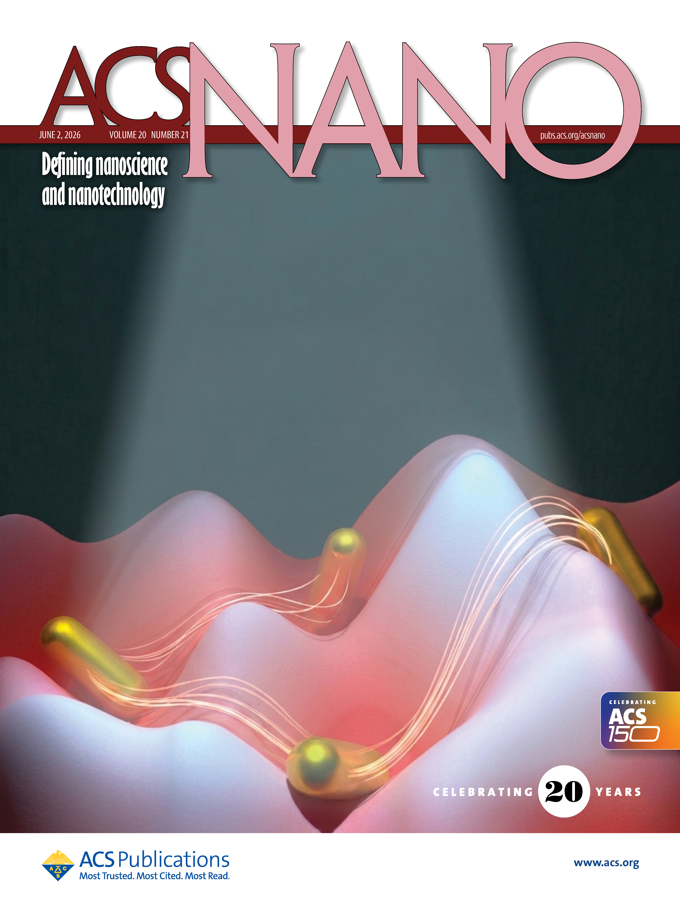
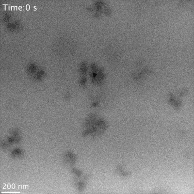
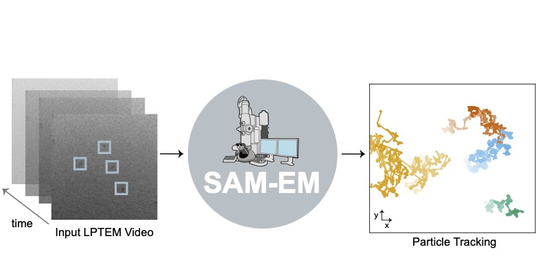
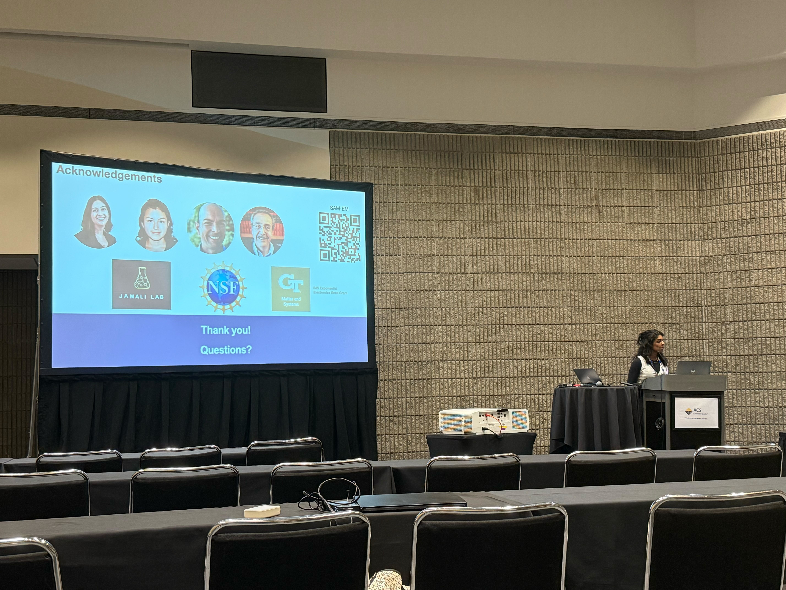

PhD researcher in soft matter and complex fluids, imaging colloidal dynamics at the nanoscale.
I am a Chemical and Biomolecular Engineering PhD candidate in the Jamali Lab at Georgia Tech developing liquid-phase transmission electron microscopy as a robust single-particle tracking tool to characterize the complex behaviors of soft matter systems at the nanoscale.
My work sits at the intersection of soft matter physics and nanotechnology, where direct visualization allows me to connect nanoscale dynamics to the emergent behavior of these systems.
I earned my Bachelor's Degree in Chemical Engineering from Purdue University where I also conducted research under Dr. Rakesh Agrawal and Dr. Jonathan Turnley on solution-based synthesis protocols for multinary sulfide thin films (e.g., Cu₂BaSnS₄, alkaline earth metal chalcogenide perovskites) as energy efficient, earth abundant alternatives for photovoltaic applications.



